se_csv <- read.csv("vhu_centroids.csv")SPPA
Quadrat Counts
Southeast - Vaihu
se_csv2 <- as_tibble(se_csv)se_csv2 # A tibble: 3,131 × 6
layer level class id x y
<int> <chr> <int> <int> <dbl> <dbl>
1 1 patch 0 1 0.0775 24.7
2 1 patch 0 2 0.0588 24.0
3 1 patch 0 3 0.0368 23.7
4 1 patch 0 4 0.0318 23.4
5 1 patch 0 5 0.0501 23.1
6 1 patch 0 6 0.0125 22.8
7 1 patch 0 7 0.0794 21.7
8 1 patch 0 8 0.00269 21.0
9 1 patch 0 9 0.0485 20.8
10 1 patch 0 10 0.0824 16.7
# … with 3,121 more rowsNorth - Anakena
north_csv <- read.csv("ana_centroids.csv")north_csv2 <- as_tibble(north_csv)north_csv2 # A tibble: 136 × 6
layer level class id x y
<int> <chr> <int> <int> <dbl> <dbl>
1 1 patch 1 1 0.330 23.4
2 1 patch 1 2 0.343 23.7
3 1 patch 1 3 0.360 1.54
4 1 patch 1 4 0.477 11.2
5 1 patch 1 5 0.494 12.6
6 1 patch 1 6 0.547 17.4
7 1 patch 1 7 0.557 1.52
8 1 patch 1 8 0.587 16.3
9 1 patch 1 9 0.779 1.81
10 1 patch 1 10 0.749 0.270
# … with 126 more rowsSoutheast Define window for spatial pattern analyses based on the extent defined above
se_window <- owin(c(0, 10), c(0, 25))attach(se_window)se_corals <- ppp(se_csv2$x, se_csv2$y, window = se_window)Summary information
summary(se_corals)Planar point pattern: 3131 points
Average intensity 12.524 points per square unit
Coordinates are given to 7 decimal places
Window: rectangle = [0, 10] x [0, 25] units
Window area = 250 square unitsThis summary shows there are 3131 points (pocilloporid coral colony) and provides the observed, lambda. The density plot can be a helpful visualization of intensity of points across the plot. By plotting the spatial intensity this way, spatial trends in the point occurrences that may violate the assumption of homogeneous point process.
West Define window for spatial pattern analyses based on the extent defined above
west_window <- owin(c(0, 10), c(0, 25))attach(west_window)The following objects are masked from se_window:
type, units, xrange, yrangewest_corals <- ppp(west_csv2$x, west_csv2$y, window = west_window)Summary information
summary(west_corals)Planar point pattern: 372 points
Average intensity 1.488 points per square unit
Coordinates are given to 7 decimal places
Window: rectangle = [0, 10] x [0, 25] units
Window area = 250 square unitsThis summary shows there are XXX points (pocilloporid coral colony) and provides the observed, lambda. The density plot can be a helpful visualization of intensity of points across the plot. By plotting the spatial intensity this way, spatial trends in the point occurrences that may violate the assumption of homogeneous point process.
North Define window for spatial pattern analyses based on the extent defined above
north_window <- owin(c(0, 10), c(0, 25))attach(north_window)The following objects are masked from west_window:
type, units, xrange, yrangeThe following objects are masked from se_window:
type, units, xrange, yrangenorth_corals <- ppp(north_csv2$x, north_csv2$y, window = north_window)Summary information
summary(north_corals)Planar point pattern: 136 points
Average intensity 0.544 points per square unit
Coordinates are given to 7 decimal places
Window: rectangle = [0, 10] x [0, 25] units
Window area = 250 square unitsThis summary shows there are XXXX points (pocilloporid coral colony) and provides the observed, lambda. The density plot can be a helpful visualization of intensity of points across the plot. By plotting the spatial intensity this way, spatial trends in the point occurrences that may violate the assumption of homogeneous point process.
Density Plots
plot(
density(se_corals)
)plot(
density(west_corals)
)plot(
density(north_corals)
)
Alter smoothing parameter
plot(
density(se_corals, 1)
) plot(
density(west_corals, 1)
) plot(
density(north_corals, 1)
) Contour plot
contour(
density(se_corals, 1)
)contour(
density(west_corals, 1)
)contour(
density(north_corals, 1)
)We can also make tallies of counts of point locations based on quadrats overlaid on the plot. To determine whether these quadrat counts conform to CSR (i.e., a homogeneous Poisson process), use a simple Chi-Square test statistic.
Quadrat counts
Counts in 10 x 25 m quadrats
se_Q <- quadratcount(se_corals, nx = 10, ny = 25)Plot
plot(se_corals, cex = 1)
plot(se_Q, add = TRUE, cex = 1)Chi-sq test for complete spatial randomness, CSR
quadrat.test(se_corals, nx = 10, ny = 25, method = "Chisq")
Chi-squared test of CSR using quadrat counts
data: se_corals
X2 = 308.08, df = 249, p-value = 0.0127
alternative hypothesis: two.sided
Quadrats: 10 by 25 grid of tilesQuadrat counts
Counts in 10 x 25 m quadrats
west_Q <- quadratcount(west_corals, nx = 10, ny = 25)Plot
plot(west_corals, cex = 1)
plot(west_Q, add = TRUE, cex = 1)Chi-sq test for complete spatial randomness, CSR
quadrat.test(west_corals, nx = 10, ny = 25, method = "Chisq")Warning: Some expected counts are small; chi^2 approximation may be inaccurate
Chi-squared test of CSR using quadrat counts
data: west_corals
X2 = 1394.1, df = 249, p-value < 2.2e-16
alternative hypothesis: two.sided
Quadrats: 10 by 25 grid of tilesThe test statistic suggests highly a non-random point pattern at the scale of the quadrat defined. Note that this test is more akin to a first-order point pattern analysis because it is based on the dispersion of points among sampling quadrats.
Quadrat counts
Counts in 10 x 25 m quadrats
north_Q <- quadratcount(north_corals, nx = 10, ny = 25)Plot
plot(north_corals, cex = 1)
plot(north_Q, add = TRUE, cex = 1)Chi-sq test for complete spatial randomness, CSR
quadrat.test(north_corals, nx = 10, ny = 25, method = "Chisq")Warning: Some expected counts are small; chi^2 approximation may be inaccurate
Chi-squared test of CSR using quadrat counts
data: north_corals
X2 = 397.09, df = 249, p-value = 1.389e-08
alternative hypothesis: two.sided
Quadrats: 10 by 25 grid of tilesThe test statistic suggests highly a non-random point pattern at the scale of the quadrat defined. Note that this test is more akin to a first-order point pattern analysis because it is based on the dispersion of points among sampling quadrats.
Ripley’s K function:
- Second-order point pattern analyses can readily be implemented in ‘spatstat’.
- Ripley’s K and the standard L functions
- Ignore edge effects with ‘(correction = “none”)’
Southeast - Vaihu
K_none_se <- Kest(se_corals, rmax = 5.0, correction = "none")- Plot K
plot(K_none_se, legend = F, main = "Southeast: Ripley's K")
- Plot L with 1:1 expectation
L_none_se <- Lest(se_corals, rmax = 5.0, correction = "none")plot(L_none_se, legend = F, main = "Southeast: standardized L function (standardized 1:1)")- Plot L with 0 expectation
plot(L_none_se, . - r ~ r, legend = F, main = "Southeast: standardized L function (standardized 0)")North - Anakena
K_none_north <- Kest(north_corals, rmax = 5.0, correction = "none")- Plot K
plot(K_none_north, legend = F, main = "North: Ripley's K")- Plot L with 1:1 expectation
L_none_north <- Lest(north_corals, rmax = 5.0, correction = "none")plot(L_none_north, legend = F, main = "North: standardized L function (standardized 1:1)")- Plot L with 0 expectation
plot(L_none_north, . - r ~ r, legend = F, main = "North: standardized L function (standardized 0)")The above analysis ignores the problem of edge effects. spatstat provides a variety of edge corrections. Contrast an (1) isotropic and (2) translate correction for adjusting for boundary effects. The isotropic correction uses a simple weighting for the area sampled near the plot boundary (Ripley 1988), the translate correction uses a toroidal shift. We adjust for potential boundary effects by typing:
Southeast – Vaihu
- Isotropic edge correction
L_iso_se <- Lest(se_corals, rmax = 5.0, correction = "isotropic")plot(L_iso_se, . - r ~ r, legend = F, main = "Southeast: standardzied L (isotropic correction)")- Translate (toroidal) edge correction
L_trans_se <- Lest(se_corals, rmax = 5.0, correction = "trans")plot(L_trans_se, . - r ~ r, legend = F, main = "Southeast: standardzied L (translate correction)")Monte Carlo simulations to calculate a global and pointwise confidence envelope under CSR
L_csr_se <- envelope(se_corals, rmax = 5.0, Lest, nsim = 99, rank = 1, correction = "trans", global = F)Generating 99 simulations of CSR ...
1, 2, 3, 4, 5, 6, 7, 8, 9, 10, 11, 12, 13, 14, 15, 16, 17, 18, 19, 20, 21, 22, 23, 24, 25, 26, 27, 28, 29, 30, 31, 32, 33, 34, 35, 36, 37, 38, 39, 40,
41, 42, 43, 44, 45, 46, 47, 48, 49, 50, 51, 52, 53, 54, 55, 56, 57, 58, 59, 60, 61, 62, 63, 64, 65, 66, 67, 68, 69, 70, 71, 72, 73, 74, 75, 76, 77, 78, 79, 80,
81, 82, 83, 84, 85, 86, 87, 88, 89, 90, 91, 92, 93, 94, 95, 96, 97, 98, 99.
Done.L_csr.g_se <- envelope(se_corals, rmax = 5.0, Lest, nsim = 99, rank = 1, correction = "trans", global = T)Generating 99 simulations of CSR ...
1, 2, 3, 4, 5, 6, 7, 8, 9, 10, 11, 12, 13, 14, 15, 16, 17, 18, 19, 20, 21, 22, 23, 24, 25, 26, 27, 28, 29, 30, 31, 32, 33, 34, 35, 36, 37, 38, 39, 40,
41, 42, 43, 44, 45, 46, 47, 48, 49, 50, 51, 52, 53, 54, 55, 56, 57, 58, 59, 60, 61, 62, 63, 64, 65, 66, 67, 68, 69, 70, 71, 72, 73, 74, 75, 76, 77, 78, 79, 80,
81, 82, 83, 84, 85, 86, 87, 88, 89, 90, 91, 92, 93, 94, 95, 96, 97, 98, 99.
Done.- Plot point-wise envelope
plot(L_csr_se, . - r ~ r, shade = c("hi", "lo"), legend = F, main = "Southeast: stand. L (Monte Carlo, CSR env)")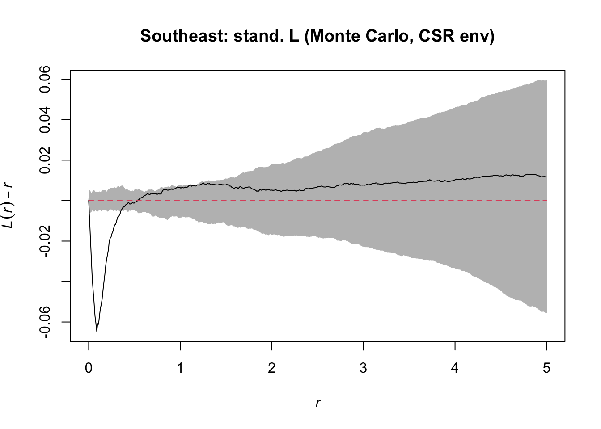
- Plot global envelope
plot(L_csr.g_se, . - r ~ r, shade = c("hi", "lo"), legend = F, main = "Southeast: stand. L (Monte Carlo, CSR env)")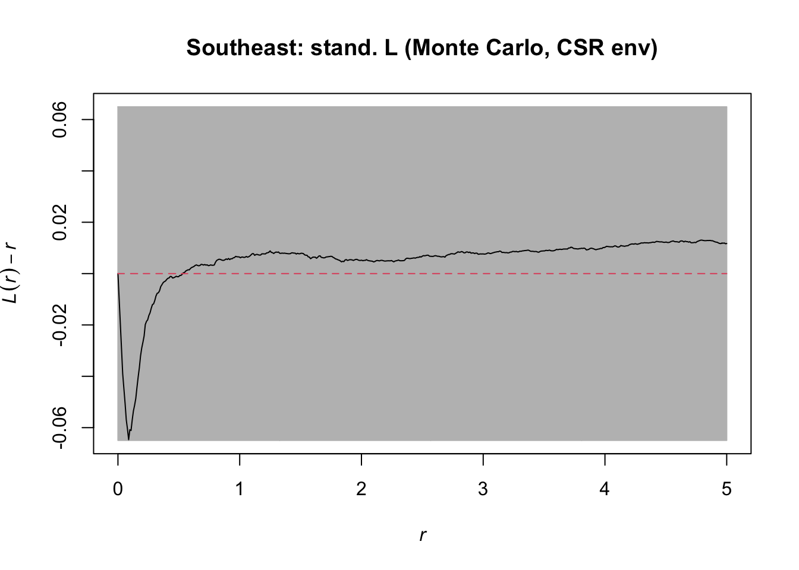
Monte Carlo simulations to calculate a global and pointwise confidence envelope under CSR
L_csr_se <- envelope(se_corals, rmax = 5.0, Lest, nsim = 99, rank = 1, correction = "trans", global = F)Generating 99 simulations of CSR ...
1, 2, 3, 4, 5, 6, 7, 8, 9, 10, 11, 12, 13, 14, 15, 16, 17, 18, 19, 20, 21, 22, 23, 24, 25, 26, 27, 28, 29, 30, 31, 32, 33, 34, 35, 36, 37, 38, 39, 40,
41, 42, 43, 44, 45, 46, 47, 48, 49, 50, 51, 52, 53, 54, 55, 56, 57, 58, 59, 60, 61, 62, 63, 64, 65, 66, 67, 68, 69, 70, 71, 72, 73, 74, 75, 76, 77, 78, 79, 80,
81, 82, 83, 84, 85, 86, 87, 88, 89, 90, 91, 92, 93, 94, 95, 96, 97, 98, 99.
Done.L_csr.g_se <- envelope(se_corals, rmax = 5.0, Lest, nsim = 99, rank = 1, correction = "trans", global = T)Generating 99 simulations of CSR ...
1, 2, 3, 4, 5, 6, 7, 8, 9, 10, 11, 12, 13, 14, 15, 16, 17, 18, 19, 20, 21, 22, 23, 24, 25, 26, 27, 28, 29, 30, 31, 32, 33, 34, 35, 36, 37, 38, 39, 40,
41, 42, 43, 44, 45, 46, 47, 48, 49, 50, 51, 52, 53, 54, 55, 56, 57, 58, 59, 60, 61, 62, 63, 64, 65, 66, 67, 68, 69, 70, 71, 72, 73, 74, 75, 76, 77, 78, 79, 80,
81, 82, 83, 84, 85, 86, 87, 88, 89, 90, 91, 92, 93, 94, 95, 96, 97, 98, 99.
Done.- Plot point-wise envelope
plot(L_csr_se, . - r ~ r, shade = c("hi", "lo"), legend = F, main = "Southeast: stand. L (Monte Carlo, CSR env)")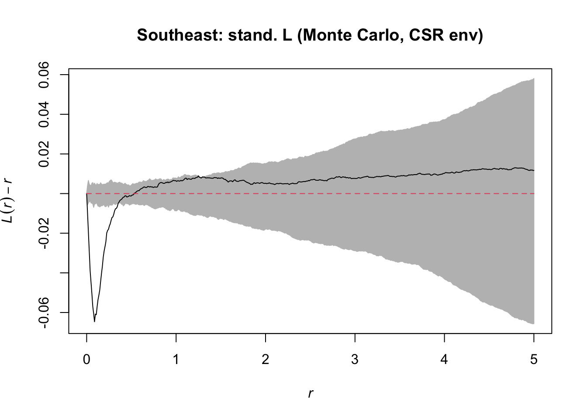
- Plot global envelope
plot(L_csr.g_se, . - r ~ r, shade = c("hi", "lo"), legend = F, main = "Southeast: stand. L (Monte Carlo, CSR env)")North - Anakena
- Isotropic edge correction
L_iso_north <- Lest(north_corals, rmax = 5.0, correction = "isotropic")plot(L_iso_north, . - r ~ r, legend = F, main = "North: standardzied L (isotropic correction)")- Translate (toroidal) edge correction
L_trans_north <- Lest(north_corals, rmax = 5.0, correction = "trans")plot(L_trans_north, . - r ~ r, legend = F, main = "North: standardzied L (translate correction)")Monte Carlo simulations to calculate a global and pointwise confidence envelope under CSR
L_csr_north <- envelope(north_corals, rmax = 5.0, Lest, nsim = 99, rank = 1, correction = "trans", global = F)Generating 99 simulations of CSR ...
1, 2, 3, 4, 5, 6, 7, 8, 9, 10, 11, 12, 13, 14, 15, 16, 17, 18, 19, 20, 21, 22, 23, 24, 25, 26, 27, 28, 29, 30, 31, 32, 33, 34, 35, 36, 37, 38, 39, 40,
41, 42, 43, 44, 45, 46, 47, 48, 49, 50, 51, 52, 53, 54, 55, 56, 57, 58, 59, 60, 61, 62, 63, 64, 65, 66, 67, 68, 69, 70, 71, 72, 73, 74, 75, 76, 77, 78, 79, 80,
81, 82, 83, 84, 85, 86, 87, 88, 89, 90, 91, 92, 93, 94, 95, 96, 97, 98, 99.
Done.L_csr.g_north <- envelope(north_corals, rmax = 5.0, Lest, nsim = 99, rank = 1, correction = "trans", global = T)Generating 99 simulations of CSR ...
1, 2, 3, 4, 5, 6, 7, 8, 9, 10, 11, 12, 13, 14, 15, 16, 17, 18, 19, 20, 21, 22, 23, 24, 25, 26, 27, 28, 29, 30, 31, 32, 33, 34, 35, 36, 37, 38, 39, 40,
41, 42, 43, 44, 45, 46, 47, 48, 49, 50, 51, 52, 53, 54, 55, 56, 57, 58, 59, 60, 61, 62, 63, 64, 65, 66, 67, 68, 69, 70, 71, 72, 73, 74, 75, 76, 77, 78, 79, 80,
81, 82, 83, 84, 85, 86, 87, 88, 89, 90, 91, 92, 93, 94, 95, 96, 97, 98, 99.
Done.- Plot point-wise envelope
plot(L_csr_north, . - r ~ r, shade = c("hi", "lo"), legend = F, main = "North: stand. L (Monte Carlo, CSR env)")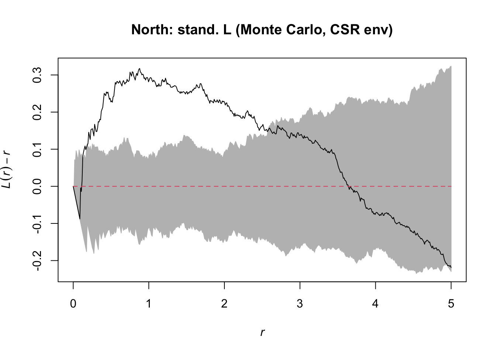
- Plot global envelope
plot(L_csr.g_north, . - r ~ r, shade = c("hi", "lo"), legend = F, main = "North: stand. L (Monte Carlo, CSR env)")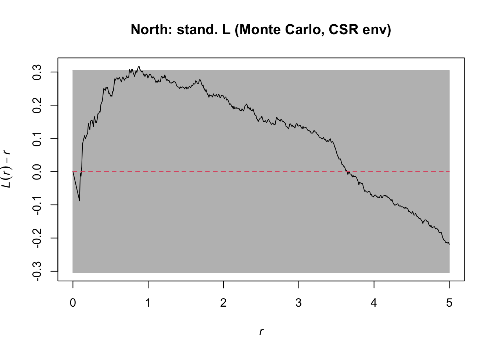
For the functions above, two lines are drawn. The \(L_{pois}\) line is a dashed line that represents the expected (theoretical) value based on a Poisson process (CSR). The way that spatstat calculates \(L\) is to linearize \(K\) such that the expected value is \(r\) (or the radius). The other solid line represents the estimated \(L\) (linearized \(K\)), when the edges are ignored.
When comparing the \(L\) function that ignores boundaries to those above that account for boundaries, notice that patterns change at larger distances - we expect that the \(L\) function at larger distances should potentially be more biased than at smaller distances because larger radii will naturally overlap more with the boundary of the study area.
When edge effects are ignored, the effect in the of counting fewer points within the radius \(r\) near the boundary, so the observed value for \(L\) or \(K\) should have an artifact of decreasing as \(r\) increases.
The analyses so far are exploratory. While the observed statistics (\(K\), \(L\)) appear different than the expectation, it is unclear if these are substantially (or significantly) different.
To conduct formal inference regarding if the point pattern follows CSR, we can use Monte Carlo simulations ro calculate a confidence envelope under CSR with the envelope function.
In the envelope function, rank specifies the alpha for the simulations. For a rank = 1, the max an min are used as the envelopes, such that for 99 simulations, alpha = 0.01 while for 19 simulations, alpha = 0.05.
Also not that we used global = FALSE. This means that these are pointwise envelopes.
These envelopes work better for \(L\) than \(K\) because of variance stabilizing properties.
Plots of pointwise envelopes show the stated upper and lower quantiles of simulated patterns for any distance r. Because such analyses are calculating envelopes for vhuy distances, pointwise envelopes with a specified alpha should not be used to reject a null model at that level (because of the multiple tests). Consequently, there are alternative global tests that can be used in this way. While global tests are under active development (Baddeley et al. 2014; Wiegand et al. 2016), spatstat does provide one option for a global test (using global = T).
This approach estimates the maximum deviation from the Poisson point process across all r (i.e., \(D = max|K_{(r)} - K_{pois(r)}|)\). This approach is referred to as a simultaneous envelope (or critical band) rather than a pointwise envelope.
If the observed line falls outside the simultaneous envelope at any point on \(r\), we would reject the null hypothesis.
Southeast – Vaihu
Ptrans_se <- pcf(se_corals, r = NULL, correction = "translate")plot(Ptrans_se)plot(Ptrans_se$r, Ptrans_se$pcf, type = "l", xlab = "r", ylab = "g(r)", main = "pair correlation")
abline(h=1, lty=1)
Penv_se <- envelope(se_corals, r = NULL, pcf, nsim = 99, rank = 1, correction =
"translate", global = FALSE)Generating 99 simulations of CSR ...
1, 2, 3, 4, 5, 6, 7, 8, 9, 10, 11, 12, 13, 14, 15, 16, 17, 18, 19, 20, 21, 22, 23, 24, 25, 26, 27, 28, 29, 30, 31, 32, 33, 34, 35, 36, 37, 38, 39, 40,
41, 42, 43, 44, 45, 46, 47, 48, 49, 50, 51, 52, 53, 54, 55, 56, 57, 58, 59, 60, 61, 62, 63, 64, 65, 66, 67, 68, 69, 70, 71, 72, 73, 74, 75, 76, 77, 78, 79, 80,
81, 82, 83, 84, 85, 86, 87, 88, 89, 90, 91, 92, 93, 94, 95, 96, 97, 98, 99.
Done.plot(Penv_se, shade = c("hi", "lo"), legend = FALSE, main = "Southeast: pair correlation function, g")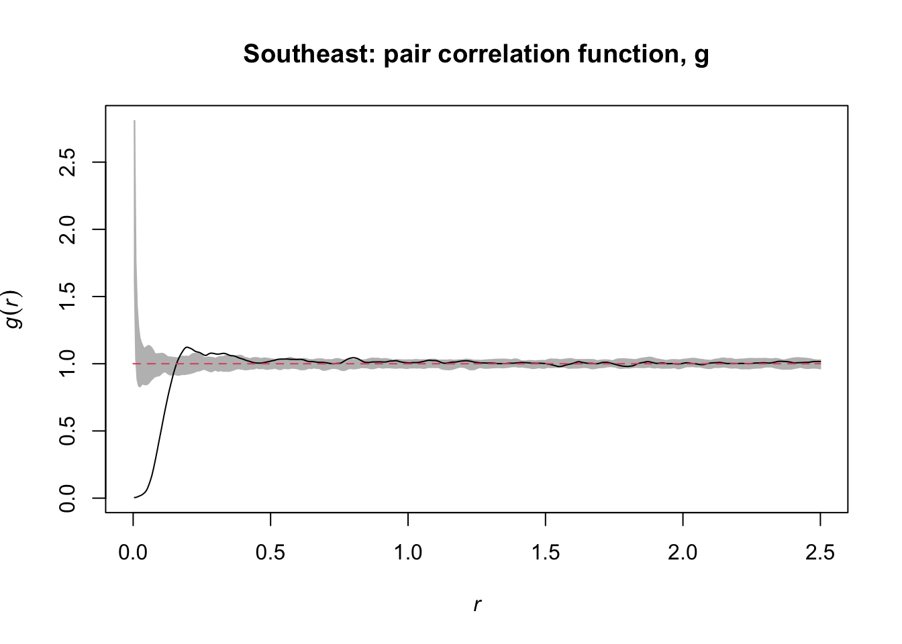
West - Manavai
Ptrans_west <- pcf(west_corals, r = NULL, correction = "translate")plot(Ptrans_west)plot(Ptrans_west$r, Ptrans_west$pcf, type = "l", xlab = "r", ylab = "g(r)", main = "pair correlation")
abline(h=1, lty=1)
Penv_west <- envelope(west_corals, r = NULL, pcf, nsim = 99, rank = 1, correction =
"translate", global = FALSE)Generating 99 simulations of CSR ...
1, 2, 3, 4, 5, 6, 7, 8, 9, 10, 11, 12, 13, 14, 15, 16, 17, 18, 19, 20, 21, 22, 23, 24, 25, 26, 27, 28, 29, 30, 31, 32, 33, 34, 35, 36, 37, 38, 39, 40,
41, 42, 43, 44, 45, 46, 47, 48, 49, 50, 51, 52, 53, 54, 55, 56, 57, 58, 59, 60, 61, 62, 63, 64, 65, 66, 67, 68, 69, 70, 71, 72, 73, 74, 75, 76, 77, 78, 79, 80,
81, 82, 83, 84, 85, 86, 87, 88, 89, 90, 91, 92, 93, 94, 95, 96, 97, 98, 99.
Done.plot(Penv_west, shade = c("hi", "lo"), legend = FALSE, main = "Southeast: pair correlation function, g")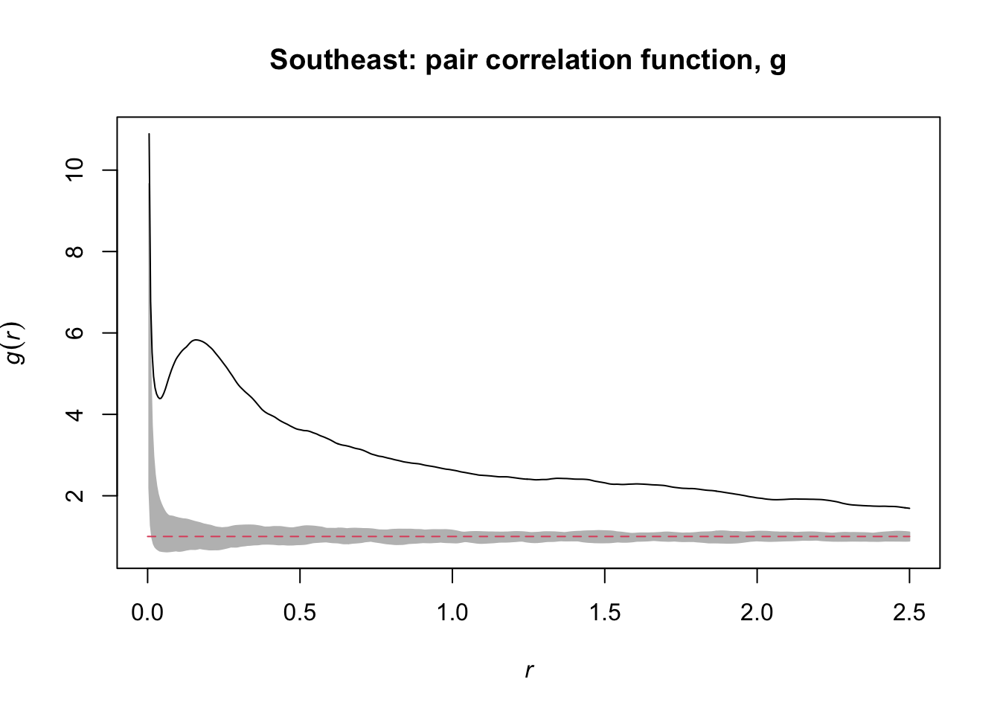
North - Anakena
Ptrans_north <- pcf(north_corals, r = NULL, correction = "translate")plot(Ptrans_north)plot(Ptrans_north$r, Ptrans_north$pcf, type = "l", xlab = "r", ylab = "g(r)", main = "pair correlation")
abline(h = 1, lty = 1)Penv_north <- envelope(north_corals, r = NULL, pcf, nsim = 99, rank = 1, correction =
"translate", global = FALSE)Generating 99 simulations of CSR ...
1, 2, 3, 4, 5, 6, 7, 8, 9, 10, 11, 12, 13, 14, 15, 16, 17, 18, 19, 20, 21, 22, 23, 24, 25, 26, 27, 28, 29, 30, 31, 32, 33, 34, 35, 36, 37, 38, 39, 40,
41, 42, 43, 44, 45, 46, 47, 48, 49, 50, 51, 52, 53, 54, 55, 56, 57, 58, 59, 60, 61, 62, 63, 64, 65, 66, 67, 68, 69, 70, 71, 72, 73, 74, 75, 76, 77, 78, 79, 80,
81, 82, 83, 84, 85, 86, 87, 88, 89, 90, 91, 92, 93, 94, 95, 96, 97, 98, 99.
Done.plot(Penv_north, shade = c("hi", "lo"), legend = FALSE, main = "North: pair correlation function, g")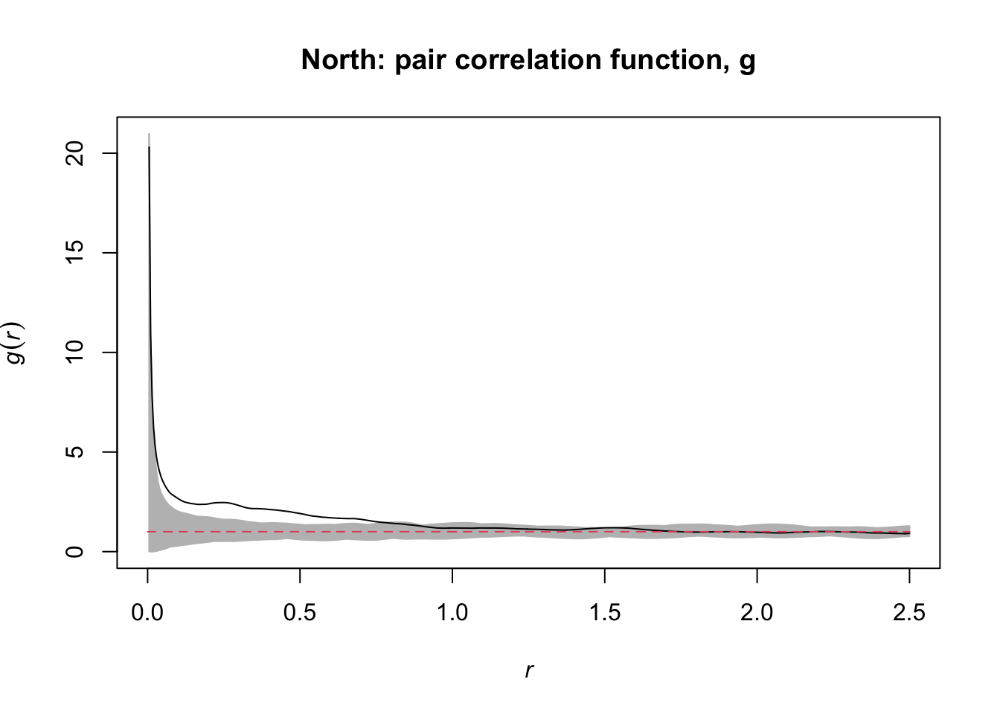
The pcf function uses a smoothing kernel such that distance bins are not needed.
The default bandwidth coefficient (related to sigma in a Gaussian kernel) for the smoothing kernel is set to 0.15 (Stoyan and Stoyan 1994).
We can adjust the smoothing on the pair correlation function using the stoyan comvhud in the pcf function.
Increasing the value of the bandwidth coefficient (e.g., stoyan = 0.4) results in a less wiggly g function.
Finally, we can use similar arguments for the G-function to estimate the probability of finding a nearest neighbor as a function of distance.
spatstat uses a similar approach as above with the Gest function.
Note that for Gest, there are subtly different ways to account for edge effects relative to above. Below we use rs, the reduced sample correction.
We can check the observed G-function calculated by spatstat to the cumulative distribution function of the empirical data (with the ecdf function):
Southeast – Vaihu
Gtrans_se <- Gest(se_corals, r = NULL, correction = "rs")plot(Gtrans_se, legend = F)Genv_se <- envelope(se_corals, r = NULL, Gest, nsim = 99, rank = 1, correction = "rs", global = FALSE)Generating 99 simulations of CSR ...
1, 2, 3, 4, 5, 6, 7, 8, 9, 10, 11, 12, 13, 14, 15, 16, 17, 18, 19, 20, 21, 22, 23, 24, 25, 26, 27, 28, 29, 30, 31, 32, 33, 34, 35, 36, 37, 38, 39, 40,
41, 42, 43, 44, 45, 46, 47, 48, 49, 50, 51, 52, 53, 54, 55, 56, 57, 58, 59, 60, 61, 62, 63, 64, 65, 66, 67, 68, 69, 70, 71, 72, 73, 74, 75, 76, 77, 78, 79, 80,
81, 82, 83, 84, 85, 86, 87, 88, 89, 90, 91, 92, 93, 94, 95, 96, 97, 98, 99.
Done.plot(Genv_se, shade = c("hi", "lo"), legend = FALSE, main = "Southeast: G-function")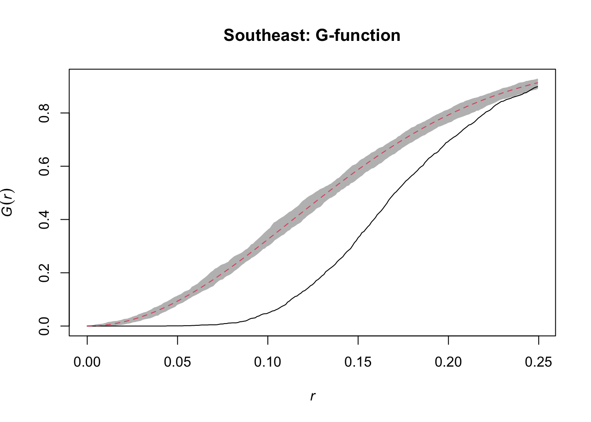
North - Anakena
Gtrans_north <- Gest(north_corals, r = NULL, correction = "rs")plot(Gtrans_north, legend = F)Genv_north <- envelope(north_corals, r = NULL, Gest, nsim = 99, rank = 1, correction = "rs", global = FALSE)Generating 99 simulations of CSR ...
1, 2, 3, 4, 5, 6, 7, 8, 9, 10, 11, 12, 13, 14, 15, 16, 17, 18, 19, 20, 21, 22, 23, 24, 25, 26, 27, 28, 29, 30, 31, 32, 33, 34, 35, 36, 37, 38, 39, 40,
41, 42, 43, 44, 45, 46, 47, 48, 49, 50, 51, 52, 53, 54, 55, 56, 57, 58, 59, 60, 61, 62, 63, 64, 65, 66, 67, 68, 69, 70, 71, 72, 73, 74, 75, 76, 77, 78, 79, 80,
81, 82, 83, 84, 85, 86, 87, 88, 89, 90, 91, 92, 93, 94, 95, 96, 97, 98, 99.
Done.plot(Genv_north, shade = c("hi", "lo"), legend = FALSE, main = "North: G-function")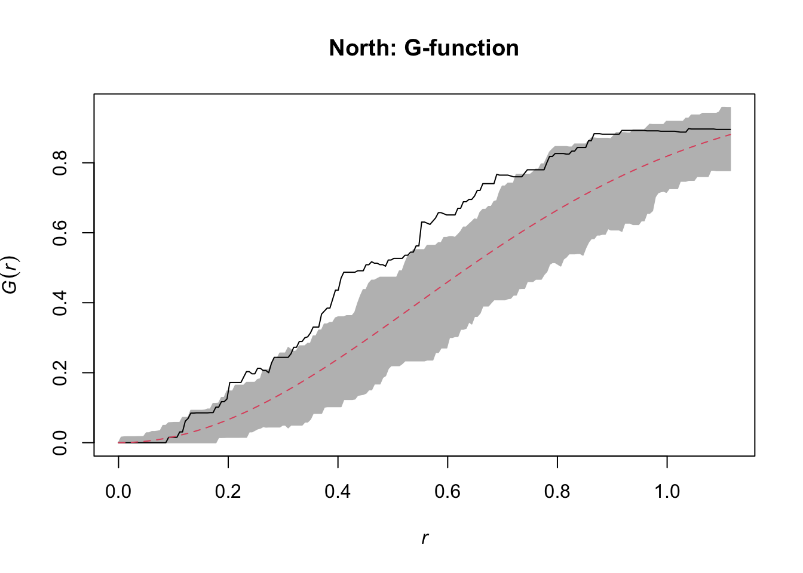
Alternative Null Models
While CSR is a useful starting point as a null model, in some situations we may be interested in using alternative null models. Some null models can be derived from a Poisson cluster process. Two common Poisson cluster processes considered in ecology are Matern cluster processes and Thomas cluster processes (Velazquez et al. 2016). In a Matérn cluster process, there are two types of points. The first are parent points, which have a Poisson distribution. Second, for each parent point, there are offspring points, which are independently and uniformly distributed around the parent points within a radius r. Consequently, these offspring points generate an underlying aggregated pattern. Similarly, with a Thomas process, offspring points are generated with parents but with an isotropic Gaussian distribution (similar to a Gaussian kernel). Such a process could reflect biological phenomena such as seed dispersal from parent plants. We can use these alternative null models in spatstat, with the above functions (\(K\), \(L\), pair correlation g, etc.). For example, a K function with a Thomas process as a null model can be quantified as:
Southeast – Vaihu
Kthomas_se <- kppm(se_corals, ~ 1, "Thomas")Kthomas_seStationary cluster point process model
Fitted to point pattern dataset 'se_corals'
Fitted by minimum contrast
Summary statistic: K-function
Uniform intensity: 12.524
Cluster model: Thomas process
Fitted cluster parameters:
kappa scale
0.09841425 9.29489907
Mean cluster size: 127.258 points
Cluster strength: phi = 0.009359
Sibling probability: psib = 0.009273summary(Kthomas_se)Stationary cluster point process model
Fitted to point pattern dataset 'se_corals'
Fitted by minimum contrast
Summary statistic: K-function
Minimum contrast fit (object of class "minconfit")
Model: Thomas process
Fitted by matching theoretical K function to se_corals
Internal parameters fitted by minimum contrast ($par):
kappa sigma2
0.09841425 86.39514879
Fitted cluster parameters:
kappa scale
0.09841425 9.29489907
Mean cluster size: 127.258 points
Converged successfully after 271 function evaluations
Starting values of parameters:
kappa sigma2
12.5240000 0.1273346
Domain of integration: [ 0 , 2.5 ]
Exponents: p= 2, q= 0.25
----------- TREND -----
Point process model
Fitted to data: X
Fitting method: maximum likelihood (Berman-Turner approximation)
Model was fitted using glm()
Algorithm converged
Call:
ppm.ppp(Q = X, trend = trend, rename.intercept = FALSE, covariates = covariates,
covfunargs = covfunargs, use.gam = use.gam, forcefit = TRUE,
improve.type = ppm.improve.type, improve.args = ppm.improve.args,
nd = nd, eps = eps)
Edge correction: "border"
[border correction distance r = 0 ]
--------------------------------------------------------------------------------
Quadrature scheme (Berman-Turner) = data + dummy + weights
Data pattern:
Planar point pattern: 3131 points
Average intensity 12.5 points per square unit
Window: rectangle = [0, 10] x [0, 25] units
Window area = 250 square units
Dummy quadrature points:
120 x 120 grid of dummy points, plus 4 corner points
dummy spacing: 0.08333333 x 0.20833333 units
Original dummy parameters: =
Planar point pattern: 14404 points
Average intensity 57.6 points per square unit
Window: rectangle = [0, 10] x [0, 25] units
Window area = 250 square units
Quadrature weights:
(counting weights based on 120 x 120 array of rectangular tiles)
All weights:
range: [0.00434, 0.0174] total: 250
Weights on data points:
range: [0.00434, 0.00868] total: 26.5
Weights on dummy points:
range: [0.00434, 0.0174] total: 223
--------------------------------------------------------------------------------
FITTED :
Stationary Poisson process
---- Intensity: ----
Uniform intensity:
[1] 12.524
Estimate S.E. CI95.lo CI95.hi Ztest Zval
(Intercept) 2.527647 0.0178714 2.49262 2.562674 *** 141.4353
----------- gory details -----
Fitted regular parameters (theta):
(Intercept)
2.527647
Fitted exp(theta):
(Intercept)
12.524
----------- CLUSTER -----------
Model: Thomas process
Fitted cluster parameters:
kappa scale
0.09841425 9.29489907
Mean cluster size: 127.258 points
Final standard error and CI
(allowing for correlation of cluster process):
Estimate S.E. CI95.lo CI95.hi Ztest Zval
(Intercept) 2.527647 0.08537972 2.360306 2.694988 *** 29.60477
----------- cluster strength indices ----------
Sibling probability 0.009272504
Count overdispersion index (on original window): 22.87956
Cluster strength: 0.009359288
Spatial persistence index (over window): 0.1227116
Bound on distance from Poisson process (over window): 1
= min (1, 6262, 490195.4, 93874.58, 302.9036)
Bound on distance from MIXED Poisson process (over window): 1
Intensity of parents of nonempty clusters: 0.09841425
Mean number of offspring in a nonempty cluster: 127.258
Intensity of parents of clusters of more than one offspring point: 0.09841425
Ratio of parents to parents-plus-offspring: 0.007796785 (where 1 = Poisson
process)
Probability that a typical point belongs to a nontrivial cluster: 1Kthomas.env_se <- envelope(Kthomas_se, rmax = 5, Lest, nsim = 99, rank = 1, global = F)Generating 99 simulated realisations of fitted cluster model ...
1, 2, 3, 4, 5, 6, 7, 8, 9, 10, 11, 12, 13, 14, 15, 16, 17, 18, 19, 20, 21, 22, 23, 24, 25, 26, 27, 28, 29, 30, 31, 32, 33, 34, 35, 36, 37, 38, 39, 40,
41, 42, 43, 44, 45, 46, 47, 48, 49, 50, 51, 52, 53, 54, 55, 56, 57, 58, 59, 60, 61, 62, 63, 64, 65, 66, 67, 68, 69, 70, 71, 72, 73, 74, 75, 76, 77, 78, 79, 80,
81, 82, 83, 84, 85, 86, 87, 88, 89, 90, 91, 92, 93, 94, 95, 96, 97, 98, 99.
Done.plot(Kthomas.env_se, . - r ~ r, shade = c("hi", "lo"), legend = F, main = "Southeast: Thomas Model")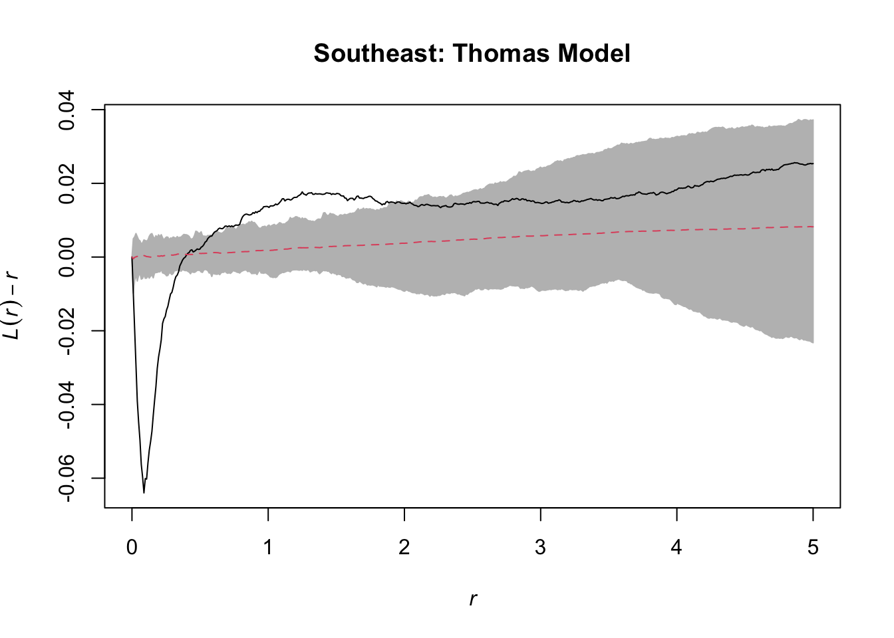
North - Anakena
Kthomas_north <- kppm(north_corals, ~ 1, "Thomas")Kthomas_northStationary cluster point process model
Fitted to point pattern dataset 'north_corals'
Fitted by minimum contrast
Summary statistic: K-function
Uniform intensity: 0.544
Cluster model: Thomas process
Fitted cluster parameters:
kappa scale
0.2166116 0.5233174
Mean cluster size: 2.511408 points
Cluster strength: phi = 1.341
Sibling probability: psib = 0.5729summary(Kthomas_north)Stationary cluster point process model
Fitted to point pattern dataset 'north_corals'
Fitted by minimum contrast
Summary statistic: K-function
Minimum contrast fit (object of class "minconfit")
Model: Thomas process
Fitted by matching theoretical K function to north_corals
Internal parameters fitted by minimum contrast ($par):
kappa sigma2
0.2166116 0.2738611
Fitted cluster parameters:
kappa scale
0.2166116 0.5233174
Mean cluster size: 2.511408 points
Converged successfully after 89 function evaluations
Starting values of parameters:
kappa sigma2
0.544000 1.095114
Domain of integration: [ 0 , 2.5 ]
Exponents: p= 2, q= 0.25
----------- TREND -----
Point process model
Fitted to data: X
Fitting method: maximum likelihood (Berman-Turner approximation)
Model was fitted using glm()
Algorithm converged
Call:
ppm.ppp(Q = X, trend = trend, rename.intercept = FALSE, covariates = covariates,
covfunargs = covfunargs, use.gam = use.gam, forcefit = TRUE,
improve.type = ppm.improve.type, improve.args = ppm.improve.args,
nd = nd, eps = eps)
Edge correction: "border"
[border correction distance r = 0 ]
--------------------------------------------------------------------------------
Quadrature scheme (Berman-Turner) = data + dummy + weights
Data pattern:
Planar point pattern: 136 points
Average intensity 0.544 points per square unit
Window: rectangle = [0, 10] x [0, 25] units
Window area = 250 square units
Dummy quadrature points:
32 x 32 grid of dummy points, plus 4 corner points
dummy spacing: 0.31250 x 0.78125 units
Original dummy parameters: =
Planar point pattern: 1028 points
Average intensity 4.11 points per square unit
Window: rectangle = [0, 10] x [0, 25] units
Window area = 250 square units
Quadrature weights:
(counting weights based on 32 x 32 array of rectangular tiles)
All weights:
range: [0.0488, 0.244] total: 250
Weights on data points:
range: [0.0488, 0.122] total: 14.9
Weights on dummy points:
range: [0.0488, 0.244] total: 235
--------------------------------------------------------------------------------
FITTED :
Stationary Poisson process
---- Intensity: ----
Uniform intensity:
[1] 0.544
Estimate S.E. CI95.lo CI95.hi Ztest Zval
(Intercept) -0.608806 0.08574929 -0.7768716 -0.4407405 *** -7.099837
----------- gory details -----
Fitted regular parameters (theta):
(Intercept)
-0.608806
Fitted exp(theta):
(Intercept)
0.544
----------- CLUSTER -----------
Model: Thomas process
Fitted cluster parameters:
kappa scale
0.2166116 0.5233174
Mean cluster size: 2.511408 points
Final standard error and CI
(allowing for correlation of cluster process):
Estimate S.E. CI95.lo CI95.hi Ztest Zval
(Intercept) -0.608806 0.1560742 -0.9147059 -0.3029062 *** -3.900747
----------- cluster strength indices ----------
Sibling probability 0.5729162
Count overdispersion index (on original window): 3.372763
Cluster strength: 1.341461
Spatial persistence index (over window): 0
Bound on distance from Poisson process (over window): 1
= min (1, 249.9261, 25153.21, 206010.5, 157.5172)
Bound on distance from MIXED Poisson process (over window): 1
Intensity of parents of nonempty clusters: 0.1990327
Mean number of offspring in a nonempty cluster: 2.733219
Intensity of parents of clusters of more than one offspring point: 0.154885
Ratio of parents to parents-plus-offspring: 0.2847861 (where 1 = Poisson
process)
Probability that a typical point belongs to a nontrivial cluster: 0.9188461Kthomas.env_north <- envelope(Kthomas_north, rmax = 5, Lest, nsim = 99, rank = 1, global = F)Generating 99 simulated realisations of fitted cluster model ...
1, 2, 3, 4, 5, 6, 7, 8, 9, 10, 11, 12, 13, 14, 15, 16, 17, 18, 19, 20, 21, 22, 23, 24, 25, 26, 27, 28, 29, 30, 31, 32, 33, 34, 35, 36, 37, 38, 39, 40,
41, 42, 43, 44, 45, 46, 47, 48, 49, 50, 51, 52, 53, 54, 55, 56, 57, 58, 59, 60, 61, 62, 63, 64, 65, 66, 67, 68, 69, 70, 71, 72, 73, 74, 75, 76, 77, 78, 79, 80,
81, 82, 83, 84, 85, 86, 87, 88, 89, 90, 91, 92, 93, 94, 95, 96, 97, 98, 99.
Done.plot(Kthomas.env_north, . - r ~ r, shade = c("hi", "lo"), legend = F, main = "North: Thomas Model")